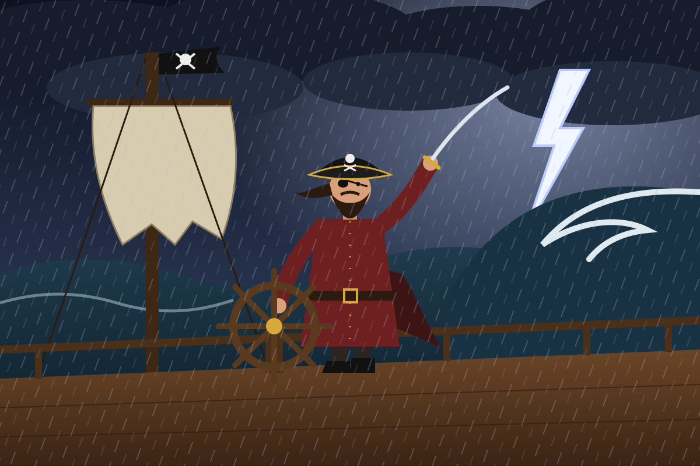

Otsikko tähän
Tähän tulee leipäteksti. Siinä kerrotaan paljon kaikista hyvistä leivistä, joita merirosvot kokkailevat. Merenneidot rakastavat merirosvojen leipää.

Hävisit pelin. lol
Tähän tulee leipäteksti. Siinä kerrotaan paljon kaikista hyvistä leivistä, joita merirosvot kokkailevat. Merenneidot rakastavat merirosvojen leipää.

Hävisit pelin. lol